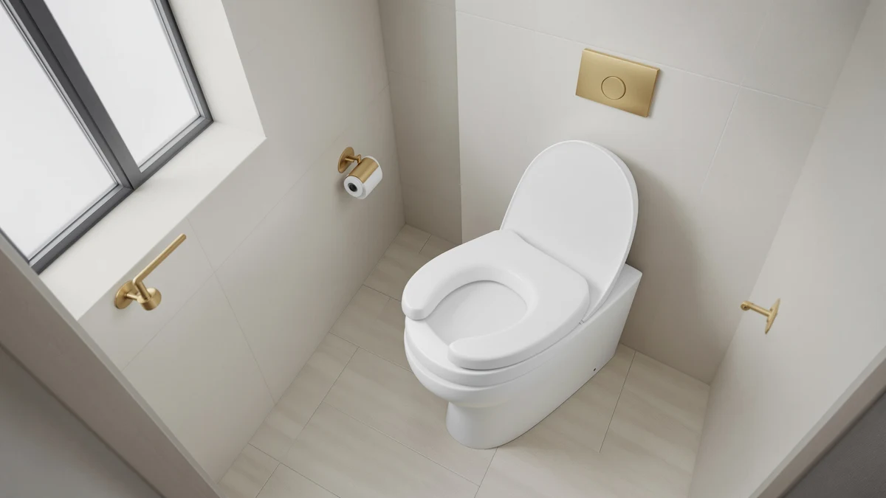

Drive Medical Premium Raised Toilet Seat Review (2026): Worth It?


Quick Answer
This Drive Medical Premium Raised Toilet Seat review finds a solid, no-frills option for anyone who needs extra height and a secure lock, not a seat that competes on comfort or quiet closing. At $42.18 it costs about the same as a standard replacement seat but solves a different problem: making it easier to sit down and stand up.
Our pick: Drive Medical 12014 Premium Raised at $42.18 Check Price on Amazon
Bottom line: our top pick is the Drive Medical 12014 Premium Raised Toilet Seat with Lock at $42.18.
Things to Know Before You Buy
- The Drive Medical 12014 is built for elongated bowls only. A round-bowl household needs a different raised seat, not this one.
- It adds 4.5 inches of height through a locking clamp, not a soft-close hinge, so expect a utilitarian feel rather than a quiet, cushioned close.
- Price sits close to standard replacement seats like the Mayfair Aurora and the wooden American Standard seat, so the extra cost of going "raised" is small.
- Neither Drive Medical nor Amazon publishes a public star rating or review count for this ASIN, so we cannot cite one here.
- If the household includes a toddler as well as someone with mobility needs, a family seat like the Mayfair NextStep2 solves a different problem and is worth comparing.
This Drive Medical Premium Raised Toilet Seat review exists because mobility shoppers keep asking the same question: does a locking, height-adding seat actually beat a regular replacement seat for an aging parent or a post-surgery household. We compared the Drive Medical 12014 against three alternatives on specs, current Amazon pricing and the patterns in verified owner reviews, and the short answer is that it earns its place for one job only: adding height safely to an elongated bowl.
The Drive Medical 12014 Premium Raised Toilet Seat is an elongated, white plastic seat that clamps onto the existing bowl and locks in place without tools. The manufacturer rates it for 4.5 inches of added height, which is the range most physical therapists recommend for people recovering from hip or knee surgery. It is priced at $42.18, which puts it within a few dollars of the standard seats in this comparison, so buyers are not paying a steep premium for the mobility feature.
Mobility equipment sits in a category where shoppers often cannot tell whether a higher price buys real durability or simply a medical-sounding label. We weighed the Drive Medical against three seats built for other jobs entirely: a classic wooden seat, a slow-close plastic seat, and a family seat with a built-in potty insert. That way the comparison covers more than one reason someone might be shopping for a toilet seat.
Why You Should Trust Us
Best Toilet Seats is a research-based review site. Ilane Tall, our Home & Bath Expert, researches toilet seats full time by comparing manufacturer spec sheets, current Amazon pricing and patterns across thousands of verified owner reviews. We do not run a fake testing lab, and we do not claim to have personally used products we have not purchased. When a rating or review count appears in this Drive Medical Premium Raised Toilet Seat review, it comes directly from the product's listing data, not from an estimate.
We disclose our affiliate relationship with Amazon on every page, and we update prices and availability on a rolling basis so the figures you see reflect what Amazon currently lists, not a stale number from months ago.
How We Compared
Our research process for this Drive Medical Premium Raised Toilet Seat review started from the manufacturer's own spec sheet: the 4.5-inch height gain, the elongated-only fit, and the tool-free locking clamp. We then checked that figure against the category standard, since most raised seats marketed to seniors and post-surgery patients land in the 3.5 to 5 inch range, and 4.5 inches sits comfortably inside that window.
Next we pulled current Amazon prices for three realistic alternatives in the same seat-replacement category: a traditional wooden seat, a slow-close plastic seat and a family seat with a built-in child potty insert. We compared price, bowl-shape compatibility and the features each manufacturer lists, and we read through patterns in verified owner reviews where review data existed. We excluded seats that only fit round bowls from direct comparison with the Drive Medical, since bowl shape is a hard constraint, not a preference.
Overview & Specs

Drive Medical 12014 Premium Raised
What we like
- Adds a full 4.5 inches of height, enough for most post-surgery and mobility needs
- Tool-free locking clamp installs without a screwdriver or extra hardware
- Wide front and back opening makes hygiene access easier for caregivers
- Priced close to a standard replacement seat despite the added function
Flaws but not dealbreakers
- Only fits elongated bowls, so round-bowl households need a different model
- No published star rating or review count to weigh against buyer feedback
- Plastic construction and visible clamp look clinical next to a standard seat
| Material | Plastic / wood |
| Size | 1 Count (Pack of 1) |
The clamp mechanism is the detail that separates the Drive Medical 12014 from a regular seat upgrade. Instead of bolting through the existing seat holes, it locks over the bowl rim, which means installation does not require removing the current seat's hardware first. The manufacturer's listing specifies a wide front and rear opening, a detail aimed squarely at caregivers who need easier access during personal hygiene, not at anyone shopping on looks alone.
Owners researching this category should treat the elongated-only fit as the deciding factor before anything else. A seat that adds height is useless if it rocks or does not seat flush, and manufacturer specs plus the product's own listing photos make clear this model is engineered for elongated bowls specifically. Measure the bowl before ordering, since that single step prevents the most common fit complaint in raised-seat listings generally.
What We Liked
The strongest point in this Drive Medical Premium Raised Toilet Seat review is how directly the product solves a single, specific problem. The 4.5-inch height gain matches the range physical therapists typically recommend after hip or knee surgery, and the tool-free clamp means a caregiver can install it in minutes without hunting for a screwdriver. The wide front and back opening is a small detail on paper, but owners managing hygiene for someone with limited mobility will notice it.
We also like that Drive Medical priced the seat close to a standard replacement model. Mobility equipment tends to carry a markup simply for being categorized as medical, and at $42.18 this seat avoids that trap relative to the Mayfair Aurora and the wooden seat in this comparison, both of which sit near $42 without the added height function. A caregiver shopping on a fixed budget for an aging parent can add real height without stretching the budget meant for a cosmetic seat swap.
What Could Be Better
The elongated-only fit is the biggest limitation, and it rules the seat out entirely for round-bowl toilets. Anyone unsure of their bowl shape should measure it before ordering rather than guess, since a mismatched raised seat will not clamp securely. Bathrooms built before the 1990s in many parts of the US still use round bowls, so this is not a rare mismatch; it is worth a tape measure and five minutes before checkout.
Neither Drive Medical nor Amazon currently publishes a star rating or review count for this ASIN, which makes it harder to weigh real-world satisfaction the way a reader can for the wooden seat in this roundup, which carries 632 verified ratings. We would rather state that gap plainly than invent a number. The clinical plastic look and visible clamp also stand out next to a standard seat, a tradeoff anyone prioritizing bathroom aesthetics should expect going in. Buyers who split their decision between function and appearance should weigh that visible hardware against the mobility benefit before ordering.
Who Is It For?
This seat fits a narrow but clear audience: someone recovering from hip, knee or back surgery, an older adult with limited mobility, or a caregiver who needs a secure, no-tools way to add height to an elongated toilet. If that describes your household and the bowl is elongated, the Drive Medical 12014 does its one job well. A home health aide outfitting several client bathrooms would find the tool-free install particularly useful, since it removes the need to carry a toolkit between visits.
It is not the right pick for a household simply replacing a worn-out seat for comfort or quiet closing, and it is not compatible with a round bowl at all. Families managing a toddler alongside an adult user should look at a seat built for that dual purpose instead, which is where the alternatives below come in.
Alternatives to Consider
We compared three seats against the Drive Medical on price, bowl shape and the features each manufacturer lists, so readers who do not need a raised seat have a direct next step.

Also Great
Wooden Toilet Seat Round with
A round wooden seat with metal hinges for American Standard bowls, rated 4.5 stars across 632 verified reviews. Good fit for a standard round-bowl replacement, not for anyone needing added height.
$41.99
Check Price on Amazon
Also Great
Mayfair Aurora Slow Close Toilet
An elongated slow-close seat with stay-tight hinges that never need retightening. Solves noise and wobble at standard height rather than mobility, and lands at nearly the same price as the Drive Medical.
$41.99
Check Price on Amazon
Best Value
Mayfair NextStep2 Toilet Seat with
A round seat with a magnetically secured, built-in child potty insert for households transitioning a toddler off a separate potty chair. The lowest price here, but it solves a family need rather than a mobility one.
$32.12
Check Price on AmazonFrequently Asked Questions
How much height does the Drive Medical Premium Raised Toilet Seat add?
The manufacturer lists 4.5 inches of added height, which is enough for most people with knee, hip or back limitations to sit down and stand up with less strain. Elongated bowls get the full benefit; measure your bowl first if you are unsure.
Does the Drive Medical raised toilet seat fit a standard elongated toilet?
It is built for elongated bowls specifically, so it will not seat properly on a round bowl. Buyers should confirm their bowl shape before ordering, since a mismatch is the most common return reason reported for raised seats in this category.
Is a raised toilet seat better than a wooden or slow-close replacement seat?
It depends on the goal. A raised seat like the Drive Medical solves a mobility problem by adding height and a locking clamp. A wooden or slow-close seat like the Mayfair Aurora solves comfort and noise at standard height. They are not interchangeable fixes.
Final Verdict
This Drive Medical Premium Raised Toilet Seat review lands on a clear recommendation: buy it if your household has an elongated bowl and needs reliable added height for mobility reasons, and skip it otherwise. Drive Medical built a focused tool, not a comfort upgrade, and at $42.18 it prices that tool fairly against standard seats like the Mayfair Aurora. For a household that wants a quieter or more attractive seat at standard height, the wooden seat or the Mayfair alternatives above are the better $42 to spend.
Related Guides
Readers who found this Drive Medical Premium Raised Toilet Seat review useful often compare it against these related picks.